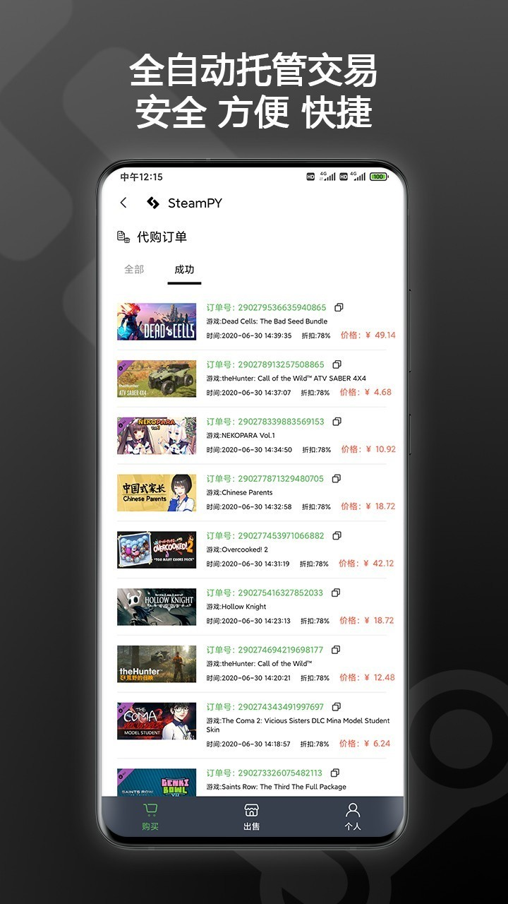

把 Steam 买游戏的全流程塞进一个 App：我用 steampy 省掉的那些手动步骤
以前买 Steam 游戏要比价、激活、送礼分三步跨好几个工具，现在全在一个 App 里搞定。讲清楚这套流程怎么拼、哪些坑要注意。
我每周大概要帮朋友带两三款 Steam 游戏，自己也时常蹲促销季补库。以前这套流程是这样的：先开浏览器翻三四个比价站找最低价，找到后去对应平台下单，拿到 CDKey 复制粘贴发给对方，对方再自己去 Steam 客户端激活入库。一套下来至少要跨浏览器、支付工具、Steam 客户端三个地方，中间任何一个环节断了都得停下来找原因——朋友不会激活要截图教我、Key 输错一次要重发、跨区的 Key 激活不了还得走售后。
现在这套全塞进了一个 App。
旧流程卡在哪里
说具体的。上回给同事买《黑神话：悟空》的促销版，我在比价站蹲了半小时才找到比 Steam 商店便宜 20% 的 Key，下单后平台发的是一串 16 位字符。我把 Key 截图发过去，同事那边 Steam 客户端开着，按"游戏 → 在 Steam 上激活产品"一步步输入，输错了两次才对。更麻烦的是他的账号是港区，那个 Key 是国区的，最后激活不了得走退款，前后绕了三天。
类似的事发生过好几次，我开始觉得需要一个能把"找最低价 → 下单 → 验证 → 交付"串起来的东西。steampy 就是在这个时候进了我的视野。

新流程：从比价到入库一条龙
我把这套流程拆成四步，每一步 steampy官网 都替我挡掉了一个以前要手动做的事。
第一步是比价和选品。打开 App 直接进游戏橱窗，上面就是热门和促销中的游戏。它不是单纯的导流页——每个商品会标明区服、交付方式（CDKey 还是托管激活），以及历史成交价。我现在基本不用再开浏览器翻比价站了，橱窗里的价格已经够准。如果想蹲特定游戏，搜索加收藏，促销时会推送提醒。
第二步是下单和交付。选好商品直接在 App 内支付，支付方式我用的是微信和支付宝。付款后订单自动进入"我的订单"，根据商品类型有两种交付方式：CDKey 订单会显示完整的 Key 并自动保存到 App 内的剪贴板记录；托管激活的商品则直接帮你把游戏激活到绑定的 Steam 账号，这一步连 Key 都不用碰。
第三步是激活和入库。这是以前最容易出问题的环节，现在分两种情况处理：
- 自己用的游戏：如果是托管激活的商品，下单时已经绑定过 Steam 账号，Steam 客户端刷新一下就能在库里看到。如果是 CDKey 订单，我直接用 App 内置的激活入口——它会调起 Steam 客户端的激活流程，Key 已经预填好了，不用手动复制粘贴。
- 送朋友的游戏：这是 steampy 上线 PY 好友体系后最大的改变。以前送游戏我要把 Key 截图发过去，对方自己激活，现在直接在下单页面点"送礼"，从好友列表选一个人就行。朋友那边 Steam 账号绑定好的话，游戏直接入库，全程不用碰 Key。我上个月帮三个朋友各买了一款游戏，整个送礼过程就是三次点选，加起来不到五分钟。
第四步是售后和溯源。steampy 有完整的订单查看系统，每笔订单都能看到下单时间、支付金额、激活状态。肥皂盒玩法（就是随机抽取那种）的订单还带 VRF 验证——2026 年 6 月之后的订单可以查看随机结果的计算公式和证明文件，防止平台改概率。我第一次看到这个功能时特意翻了两笔历史订单，公式和结果对得上，这个设计在同类平台里不多见，具体计算逻辑可以去steampy文档了解。
几个容易断链的环节
流程跑了大概两个月，有两个地方我觉得新手特别容易踩坑，提前说一下。
第一是卸载重装的问题。steampy 的版本更新有时候官方会在公告里直接写"请卸载旧版后重新下载"，不是常规的覆盖升级。第一次遇到时我没当回事，覆盖安装后 CDK 订单登录就出了问题——登进去但看不到订单。后来按公告说的官方下载重新安装、重新绑定 Steam 账号才好。官方解释是登录态和 Steam 绑定关系存在本地缓存里，覆盖安装清不掉，所以必须走干净重装。现在我养成了习惯：看到公告里写"卸载重装"就老老实实按要求来，别省那一分钟。
第二是区服匹配。这点和旧流程的坑一样，但 steampy 帮你把风险降低了一半——商品页会明确标注区服限制，下单前多看一眼。真要激活失败也别反复试（可能触发 Steam 风控），直接带订单号走 App 内的售后入口就行。

效果和边界
算一下具体省了什么：以前给朋友送一次游戏要"比价 20 分钟 + 下单 5 分钟 + 发送 Key + 对方激活 5 分钟 + 可能的远程协助 10 分钟"，现在就是 App 里搜游戏 → 下单 → 选好友送礼，整个流程不超过两分钟。少了三次手动复制粘贴、两次跨工具切换、一次可能的远程协助。
自己买游戏的话也差不多——以前找完最低价还要跳转三个页面下单，现在 App 内闭环，托管激活的商品连 Key 都不用见。
当然也有边界。steampy 不替代 Steam 客户端，它更像是一个交易入口和订单管理中心。已经在 Steam 商店以原价买过的游戏不会出现在它的体系里，促销力度也不是每款都比 Steam 商店便宜——还是要自己看橱窗里的价格对比。另外，版本更新虽然大部分是覆盖安装，但遇到官方明确要求卸载重装的时候，记得先记一下自己的好友代码（App 个人页 PY 好友里能看到），重装后要重新绑定 Steam 账号。
如果你也是个经常在 Steam 上买游戏的人，或者像我一样偶尔要帮朋友带一两款，不妨试试这套流程。从比价到入库全在一个 App 里，中间不用跨浏览器、不用手动复制 Key、不用截图教朋友怎么激活——把省下来的时间留着真正玩游戏吧。